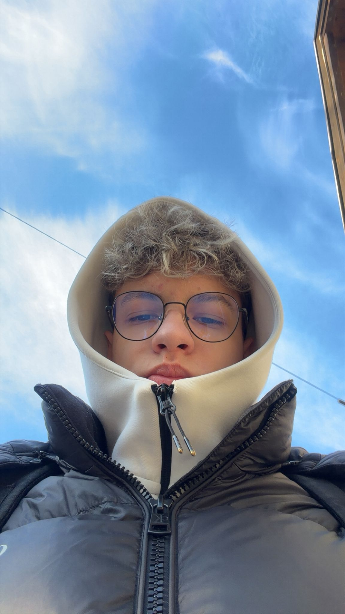
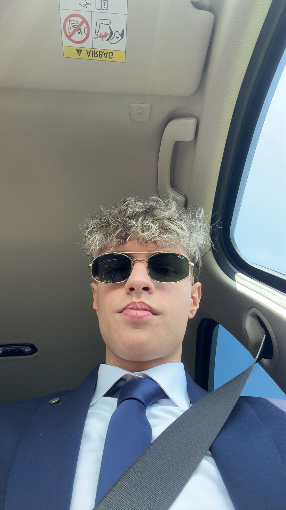

I'm

Zovem se Noa i dolazim iz Hrvatske. Zanimaju me Sport, nogomet posebno, igrice i programiranje. Volim učiti nove stvari i razvijati svoje vještine u IT području.
Name: Noa Kovčalija
Location: Croatia
School: Tehniučar za Računalstvo
Interest: Programming
Hobby: Sport(Nogomet)
Goal: Developer
Nogomet je moj omiljeni sport i jedna od najvažnijih aktivnosti u slobodno vrijeme. Redovito ga igram jer me opušta, ali i razvija timski duh, disciplinu i fizičku spremu. Kroz nogomet učim kako raditi u timu i kako se nositi s pobjedama i porazima.
Ribolov mi je način opuštanja i bijega od svakodnevnog stresa. Volim provoditi vrijeme u prirodi, uz vodu, gdje mogu smiriti misli i uživati u tišini. Osim toga, ribolov me uči strpljenju i koncentraciji.
Igranje video igara je moj način zabave i opuštanja. Posebno volim kompetitivne igre jer razvijaju brzinu razmišljanja, strategiju i reakcije. Također, kroz igrice često komuniciram i surađujem s drugim igračima.
Programiranje nije samo moj interes nego i hobi u kojem uživam. Volim učiti nove tehnologije i stvarati projekte koji mi pomažu razviti logičko razmišljanje i kreativnost. Cilj mi je stalno napredovati i jednog dana postati profesionalni developer.